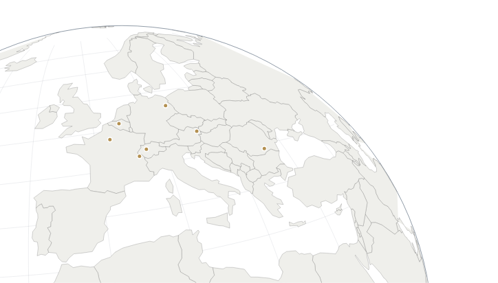

8Cities
7Countries
4Courses
Let Europe beyour laboratory
The European Union and Global Affairs Study Abroad Program takes you to the cities and institutions shaping Europe and the world. Study global affairs where they happen in Summer 2027.
Make the summer count
Earn a Certificate in European Studieswith the program's four courses
Complete the International Affairs minorwith the program plus one additional course
Apply now atinta.gatech.edu/europeglobal
Four courses in global affairs
- Politics of the European UnionINTA 2221 / 4903
- Transatlantic RelationsINTA 3223 / 6833
- European Security IssuesINTA 3120 / 6121
- Global Politics of TechnologyINTA 3044 / 8803